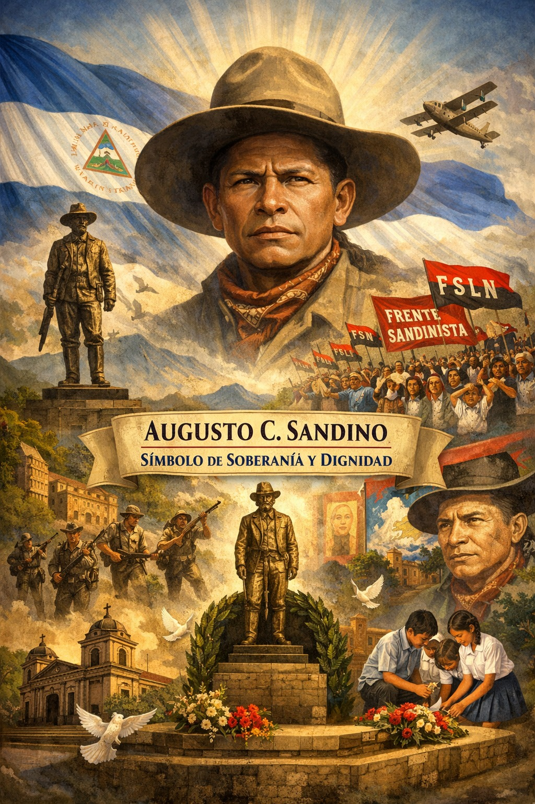

Universidad Nacional De Ingeniería
Universidad Nacional De Ingeniería

El reconocimiento de Augusto C. Sandino en Nicaragua se consolidó progresivamente a lo largo del siglo XX. Aunque en vida fue perseguido y considerado enemigo por sectores del poder político, con el paso del tiempo su figura fue reivindicada como símbolo máximo de la defensa de la soberanía nacional. Su resistencia frente a la intervención extranjera y su firme postura de no aceptar acuerdos que comprometieran la independencia del país lo posicionaron como un referente histórico fundamental.Actualmente, Sandino es reconocido como uno de los héroes nacionales más influyentes. Su nombre está vinculado directamente a la lucha por la autodeterminación y a la afirmación de la identidad nicaragüense frente a presiones externas. Este reconocimiento no solo es popular, sino también institucional y académico.
A nivel oficial, la figura de Sandino ha sido incorporada en discursos históricos, programas educativos y conmemoraciones nacionales. Su imagen aparece en monumentos, plazas, murales y espacios públicos que resaltan su importancia dentro de la memoria colectiva.Su representación más conocida con sombrero alado y postura firme se ha convertido en un símbolo visual de resistencia. Diversas instituciones, centros educativos y espacios públicos llevan su nombre, reflejando el lugar central que ocupa en la narrativa histórica del país.Este reconocimiento institucional consolida su figura como parte integral del patrimonio histórico y simbólico de Nicaragua.
El legado de Sandino adquirió una dimensión política relevante cuando el Frente Sandinista de Liberación Nacional adoptó su nombre como referencia histórica e ideológica. Este hecho proyectó su figura hacia el centro del debate político contemporáneo y fortaleció su presencia en la vida pública nacional.Más allá de las interpretaciones partidarias, su nombre continúa asociado a valores como soberanía, independencia y resistencia frente a la intervención extranjera. Su reconocimiento político ha contribuido a mantener vigente su legado dentro de la historia moderna del país.
Fuera de Nicaragua, Sandino es reconocido como una de las primeras figuras latinoamericanas que lideraron una resistencia sostenida contra la intervención militar estadounidense en la región. Su lucha fue observada internacionalmente y con el tiempo se convirtió en objeto de estudio dentro del análisis histórico del antiimperialismo latinoamericano.Su figura trascendió las fronteras nacionales y pasó a representar un ejemplo de resistencia en el contexto de las relaciones entre América Latina y potencias extranjeras. Este reconocimiento regional amplió el alcance histórico de su legado.
En el ámbito académico, historiadores e investigadores han estudiado su pensamiento político, su estrategia militar y su impacto en la construcción de la identidad nacional. Estos estudios han permitido contextualizar su figura dentro de procesos históricos más amplios, tanto nacionales como continentales.El análisis histórico ha contribuido a consolidar una visión más completa de Sandino, reconociendo tanto su papel militar como su influencia ideológica. Gracias a estas investigaciones, su legado continúa siendo objeto de reflexión en debates sobre soberanía, intervención extranjera y justicia social.
Tras su asesinato en 1934, durante el proceso de consolidación del poder de Anastasio Somoza García, su figura adquirió un carácter simbólico aún más fuerte. Su muerte reforzó su imagen como mártir de la soberanía nacional y fortaleció su presencia en la memoria colectiva.En el ámbito cultural, su imagen ha sido representada en obras artísticas, investigaciones históricas y expresiones simbólicas que resaltan su papel como defensor de la dignidad nacional. Sandino no solo representa un episodio histórico, sino valores asociados a la resistencia, el compromiso y la firmeza frente a la adversidad.